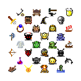
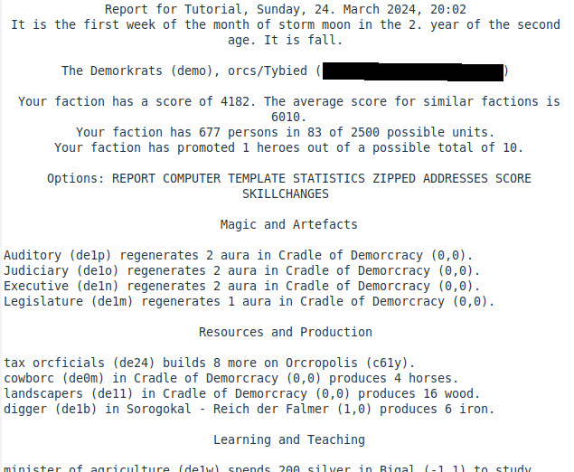

Introduction

Dans Eressea, chaque joueur prend en charge une faction de personnes d'une certaine race, qu'il peut choisir lors de l'Inscription. Les joueurs sont ensuite plongés avec quelques autres dans le monde d'Eressea et à partir de là peuvent commencer à explorer les alentours et plus.

Eressea est un monde fantastique. Des êtres comme les Elfes et les Nains peuplent le monde, et la magie fait partie du quotidien. Même des dragons ont été aperçus, des monstres grands, puissants et surtout dangereux, qui nécessitent des centaines de soldats pour les affronter, ainsi que des serpents de mer, des Ents et d'autres créatures étranges.
Eressea est un vaste monde. Des centaines de peuples vivent sur les îles d'Eressea, et la plus part ne se rencontreront probablement jamais, car il peut falloir des années pour combler les distances.
L'Eressea est un monde complexe. Diriger un peuple n'est pas une tâche facile. Il y a beaucoup de choses à prendre en compte pour que tout se passe correctement, et c'est sans compter l'intervention vos voisins ! Il faut trouver des accords, il se peut qu'il y ait des querelles, voire une guerre. Même si tout se passe bien, Eressea prend beaucoup de temps. Alors qu'au début, il faut à peine une heure par semaine, cela peut monter à dix heures et plus par semaine.

Il n'y a pas d'objectif de jeu clair dans Eressea, pas de fin à atteindre. Tu peux te fixer des "objectifs d'étape" à atteindre, que ce soit la construction d'un empire commercial, la conquête d'une île entière, l'exploration d'un maximum de régions ou quoi que ce soit d'autre. Quoi qu'il en soit, cela aura un impact sur le monde que tu peux décrire et dont tu peux influencer le destin.
Comment fonctionne le jeu

Dans Eressea, tu envoies un train d'ordres à intervalles réguliers. Un train est composé d'ordres que les unités de ta faction dans ce monde vont exécuter du mieux qu'elles peuvent. Un train ressemble à un programme informatique, afin que le serveur, le programme informatique qui connaît l'état du monde, puisse l'évaluer ainsi que les trains de tous les autres joueurs et calculer le nouvel état du monde. Le rythme des trains est d'un par semaine, la date limite de remise des trains, Due Date (ZAT pour les joueurs allemands) est le samedi soir à 21h00 (CET). En réponse à ton train d'ordres, tu reçois un rapport qui contient l'état du monde connu de ta faction. Le rapport se compose de plusieurs parties : un NR (rapport normal), qui présente le rapport sous une forme facile à lire pour les humains. Un CR (rapport informatique/computer report), qui présente les mêmes informations, mais sous une forme lisible par ordinateur, avec des programmes adaptés. Et un modèle de train(txt) qui peut servir de modèle (template) pour ton prochain tour. Il peut aussi y avoir le point hebdomadaire (Wochenbericht), qui contient quelques statistiques sur l'état général du monde. Et parfois le Xontormia Express, la gazette alimentée par les écrits des joueurs.
Si aucun train d'ordres n'est parvenu au meneur de jeu, il y a ce qu'on appelle un NMR (No Move Received). En cas de 4 NMR consécutifs, la faction est automatiquement retirée du jeu, donc au 5ème NMR, la faction est supprimée.
|--------------|---------| | En savoir plus : | Monde |